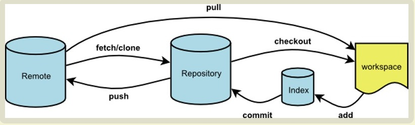

项目概要
创建于: 2020/07/05 08:23:50 0.0.0
更新于: 2020/08/23 23:32:05 0.1.5
项目名称： Faradays 〔Ocean〕
设计理念：立足现在，放眼未来。
许可协议：请遵守 APGLv3 协议，侵权必究！
Licensed under GNU APGLv3.
You may send your request to imhhj@vip.qq.com and wait for your License Confirmation email.
See https://www.gnu.org/licenses/agpl-3.0.html or https://choosealicense.com/licenses/agpl-3.0/ for the license details.

hexo 基础知识
hexo 内置变量 https://hexo.io/zh-cn/docs/variables.html
layout.ejs 是整个页面的入口，所有的页面都基于 layout.ejs生成
Faradays 主题结构
layout 目录清单如下：
│ archive.ejs
│ category.ejs
│ index.ejs // 首页
│ layout.ejs // 布局（所有页）
│ page.ejs
│ post.ejs // 文章页
│ tag.ejs
│
├─_partial
│ │ after-footer.ejs
│ │ archive-post.ejs
│ │ archive.ejs
│ │ article.ejs
│ │ footer.ejs
│ │ head.ejs
│ │ header.ejs
│ │ mobile-nav.ejs
│ │ search.ejs
│ │ sidebar.ejs
│ │
│ ├─plugins
│ │ ├─analytics
│ │ │ baidu-analytics.ejs
│ │ │ cnzz-analytics.ejs
│ │ │ google-analytics.ejs
│ │ │
│ │ ├─comments
│ │ │ changyan.ejs
│ │ │ gitment.ejs
│ │ │ wangyiyun.ejs
│ │ │ youyan.ejs
│ │ │
│ │ └─sites
│ │ visit.ejs
│ │
│ └─post
│ category.ejs
│ copyright.ejs
│ date.ejs
│ gallery.ejs
│ nav.ejs
│ reward.ejs
│ share.ejs
│ tag.ejs
│ title.ejs
│ toc.ejs
│
└─_widget
archive.ejs
category.ejs
recent_posts.ejs
tag.ejs
tagcloud.ejs使用注意事项
- Front-matter 中的数字应当使用引号包围，才能形成字符；如果需要转换为数字，可以使用相应的 JavaScript 转换函数。
Git 命令集成

- 测试 GitHub 可访问性
ssh -T git@github.com
- 更新主分支（下载更新）
D: && D:\faradays-studio.github\faradays-studio.github.io && git checkout
- 更新其他分支（下载更新）
git checkout -b blog origin/blog
git checkout -t origin/blog - 提交到本地
git commit -a -m u”pdate the website statement”
- 提交到GitHub
git push origin master
git checkout -b <分支名>
git checkout -b blog
从 服务器 下载更新到本地
由于 hexo 更新后，本地会版本落后，因此需要更新
git pull <远程主机名> <远程分支名>:<本地分支名>
git pull origin master
或 git pull origin master:master
git pull origin blog:blog
出现 HEAD detached at 68e8065 等错误的解决方法：
git branch blog_temp1 blog # 给 blog 起个 branch 名 blog_temp1
git branch -a
git checkout blog # Head 指向实际使用的 branch，注意不是 origin/blog
git merge blog_temp1 # 融合到当前 branch
合并时存在问题，如果以本地为准 git add，以服务器为准则 git rm XXXX，然后 git commit
再重新执行合并
git branch -d blog_temp1 # 删除临时 branch
删除特定 commit (# 由于 hexo 自身存在一个版本库，因此需要进行相应的处理)
git log
git rebase -i XXX # 将需要删除的最早的提交之前的一次提交做基础
将相关 commit 记录中的 pick 改为 drop，保存即实现本地删除。
git push origin blog -f # 强制提交本地版本到远程（实现远程删除）
git status # 查看状态
git log –oneline
git pull origin blog:blog
git log –oneline
cd D:\WebSites\faradays-studio.hexo\.deploy_git
执行上述过程，如出现 `HEAD detached ` 等报错，注意分支名称实际为 master，
执行 hexo 同步至远程
```Shell
# 从 GitHub 下拉取版本库，确保本地文件为最新
git pull origin blog:blog
# 查看更新日志
git log
相关 log 文件使用 VI 的形式打开，因此可以按 shift + G 跳转到底，按 q 退出修改。
# 将需要删除的最早提交的前一次提交，设置为版本基础
git rebase -i 982c78fc82a2a3804233e9ff7ef315fc21dc0822
在弹出文件中，将会展示在该提交之后的每个提交信息
将相关 commit 记录中的 pick 改为 drop，保存即实现本地删除。
出现 `HEAD detached at 982c78f` 报警
# 查看当前分支情况
git branch -a
# 将当前分支改名
git branch blog_temp1 blog
# 解决由于删除造成的版本 merge 报警
git rm -r about
git rm content.json
git rebase --continue
git commit
git push origin blog -f
# 合并分支
git merge blog_temp1
# 重新对 Head 指向 branch（测试表明该步骤不能执行）
# git checkout blog
# 删除临时的版本
git branch -d blog_temp1
git log --oneline
# git pull origin blog:blog 等命令无法对 hexo 的版本库进行更新
git rebase -i 982c78fc82a2a3804233e9ff7ef315fc21dc0822
# 查看状态
git status
git rm -r about
git rm content.json
git rebase --continue
git log
git log --oneline
```$git clone <远程Arepository> #克隆你fork出来的分支
$git remote add <远程B repository标签> git@github.com:XXXX/ceph.git #添加远程B repository标签
$git pull <远程B厂库标签> master:master #从远程Brepository的master分支拉取最新objects合并到本地master分支
$git checkout YYYY #切换到要修改的分支上
$git branch develop; git checkout develop #在当前分支的基础上创建一个开发分支，并切换到该分支上，你将在该分支上coding
coding…… #在工作区coding
$git add .#将修改保存到索引区
$git commit -a #将修改提交到本地分区
$git push origin my_test:my_test #将本地分支my_test提交到远程A repository的my_test分支上
查看分支
git branch -a
git branch -v
git branch -r
查看最近的 commit 信息
git show HEAD
按 q 退出
UniqueColor.
git chekout分支遇到问题：need merge[EB/OL].https://www.cnblogs.com/UniqueColor/p/6594942.html, 2020/08/26.奔跑的小龙码.
git删除指定commit[EB/OL].https://www.cnblogs.com/lwcode6/p/11809973.html, 2020/08/26.通过 add /rm 来指定本机处理措施，git commit -s，再 pull，再push
Jack_Chao.
Git 快速使用 之 冲突 merge 快速解决[EB/OL].https://www.jianshu.com/p/50ef88bda474, 2020/08/26.星辰之力.
git push & git pull 推送/拉取分支[EB/OL].https://www.cnblogs.com/zhujiabin/p/9641305.html, 2020/08/27.
研究总结
独立页的功能测试
测试表明，独立页面使用 hexo 内置的渲染有以下特点（.md 文件直接放相应的目录下，不做任何特殊处理，系统原生使用 layout: page 渲染）：
- 不支持标签、分类。
- 生成的 .HTML 名称是 .md 文件名，与默认的 _post 目录下的文件按项目配置文件 _config.yml 中定义的 permalink 格式是有明显区别的。
- 相关页面不会被索引到首页、归档页，也不会进入使用 site.posts 循环读取的时间轴页上。
- 个人感觉：使用 hexo 的 Front-matter 指定的标题样式比使用 h1 配置要合适一点（因为默认的 h1 渲染出来的文字太大了！！！）
- 独立页面中的链接的 .html 扩展名不能删除，也不会被裁减。
- 在页面中定义 permalink 、 path 等均毫无意义，独立页仍然使用 :title（文件名）.html 作为连接名（实际上，个人还是喜欢这种形式的链接，名称固定，一目了然，而且只要不放出来，别人就不一定能够猜出来）
最后更新： 2020/08/27 21:10:12
编著： David Faraday
原始链接： https://faradays-studio.github.io/about/change_log-hexo.html
引用、演绎等请注明出处，共创和谐社会，谢谢你的合作！